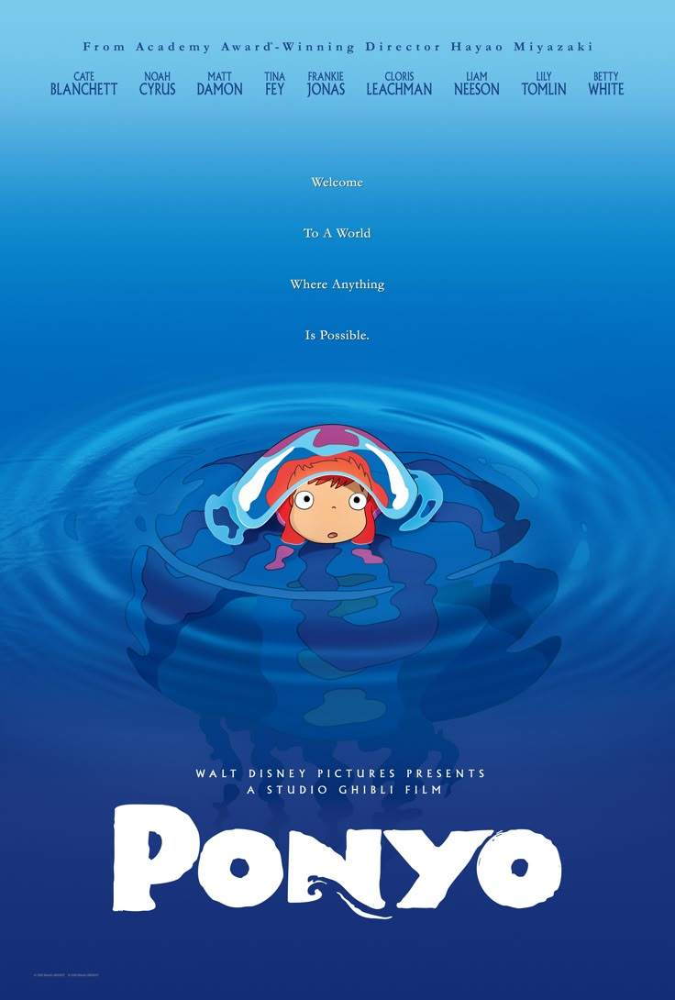
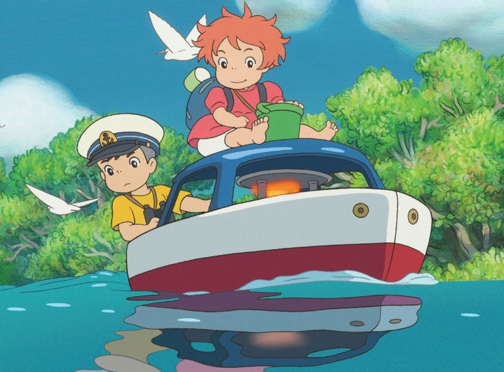
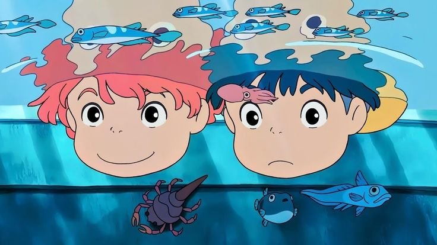
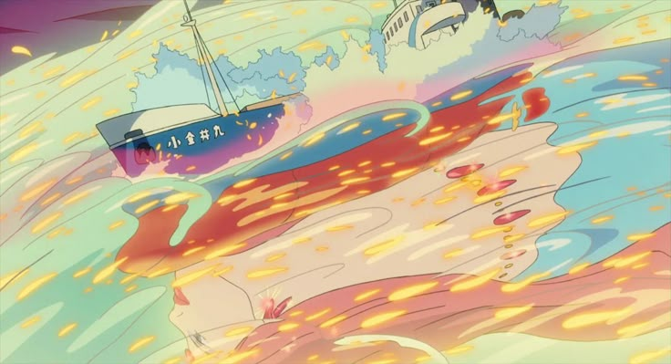
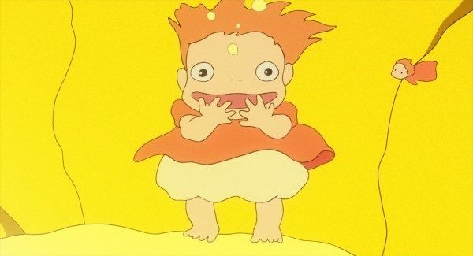
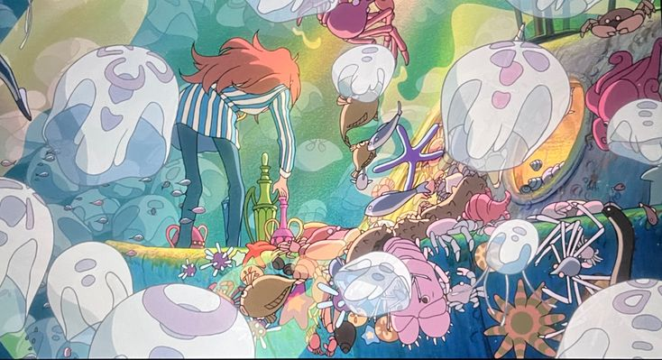
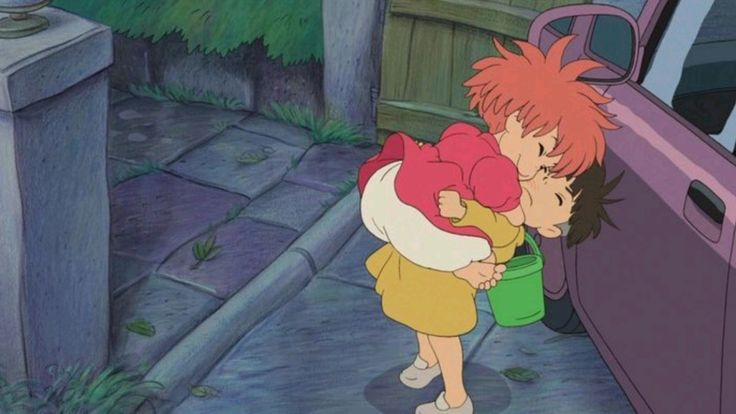

Ponyo
Одного ранку Соске знаходить у морі дивовижну рибку: у неї людське обличчя і червоні плавники, вона любить ковбасу і вміє чаклувати. Соске називає свою знахідку «Поньо» і вирішує берегти і захищати. Звідки йому знати, що він виловив дочку морської володарки і тим прирік себе на дивовижні пригоди у найближчому майбутньому? ..






"Ми повинні бути сильними, аби подолати всі перепони!"